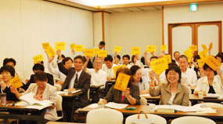

埼玉県生協連第38回通常総会が終了しました
6月25日にさいたま共済会館で開かれ、全ての議案が、賛成多数で承認されました。
代議員定数４２人中４２人が出席（実出席３５、委任１、書面議決６）しました。
| (1) | 司会の新井常務理事が開会の挨拶を行い、総会が代議員数の過半数を超えて成立していることを報告しました。続いて、議長に新井代議員(さいたまコープ)と林代議員(医療生協さいたま)が選出されました。 | ||||||||||||||||||||||||||||||||||||||||||||||||||||||||||||||||||||||||
| (2) | 石川会長理事が埼玉県生協連を代表して、「冷凍餃子事件や100年に一度の不況など厳しい経営環境の中でも県内の生協は健全経営を維持することができた。2009年度の経営環境はさらに大変であり、日本の生協が組合員のくらしに役立てるかどうかが問われている。また、社会的な役割の発揮として、環境問題への対応、食料自給率問題への対応、2010年ＮＰＴ再検討会議に向け日本生協連として代表派遣や学習など核兵器廃絶の取り組みを行うこと、消費者行政の充実強化の取り組みが前進したが中身をどうするかが今後の課題であること、食の安全安心のトップランナーとして品質保証強化を強めること、が大切である」とあいさつしました。 |
||||||||||||||||||||||||||||||||||||||||||||||||||||||||||||||||||||||||
| (3) |
出席された来賓の皆様からご挨拶をいただきました。
|
||||||||||||||||||||||||||||||||||||||||||||||||||||||||||||||||||||||||
| (4) | 伊藤専務理事より、第１号から第４号議案までの提案が行われました。組合員と生協をめぐる状況として、新自由主義の破綻により経済をはじめとしたあらゆる制度・システムの大転換が求められている、食の安全を求める声はますます大きくなっている、社会保障を充実することが雇用と内需拡大にも繋がる、かけがえのない地球を子どもたちに引き継いでいくために温室効果ガス削減目標の達成がまったなしであることと電気ダイエットコンクールの取り組みへの参加呼びかけ、核兵器廃絶の流れが世界的に急速に広がっている、消費者庁設置などの消費者行政充実の取り組みが前進したことなどを中心に報告するとともに、2009年度の重点などを提案しました。続いて松浦特定監事より監査報告が行われました。 | ||||||||||||||||||||||||||||||||||||||||||||||||||||||||||||||||||||||||
| (5) |  その後、発言申し込みにもとづき、二ノ宮代議員(さいたまコープ)から「1日エコライフＤＡＹをはじめとした、組合員の環境保全の取り組みと電気ダイエットコンクール」、蟹沢代議員(さいたま住宅生協)から「生協間の協力・共同が生んだ事業計画」、永島代議員(医療生協さいたま)から｢医療生協さいたまの2008年度の取り組み｣、田中代議員(ドゥコープ)から｢ドゥコープにおける2008年度活動の取り組み｣、増田代議員(さいたま高齢協)から｢介護事業者の現状と待遇改善｣について発言がありました。 | ||||||||||||||||||||||||||||||||||||||||||||||||||||||||||||||||||||||||
| (6) |
第1号から第５号議案の採択を行い、いずれの議案も、反対・保留０、賛成多数で承認されました。採択された議案は以下のとおりです。
|
||||||||||||||||||||||||||||||||||||||||||||||||||||||||||||||||||||||||
| (7) | 採択、総会役員の解任のあと、新井常務理事が閉会を宣言し終了しました。 | ||||||||||||||||||||||||||||||||||||||||||||||||||||||||||||||||||||||||
|
埼玉県生協連の新役員体制 ２００９年６月２５日 埼玉県生協連第１回理事会 【理事】定数２０人
【監事】定数３人
|